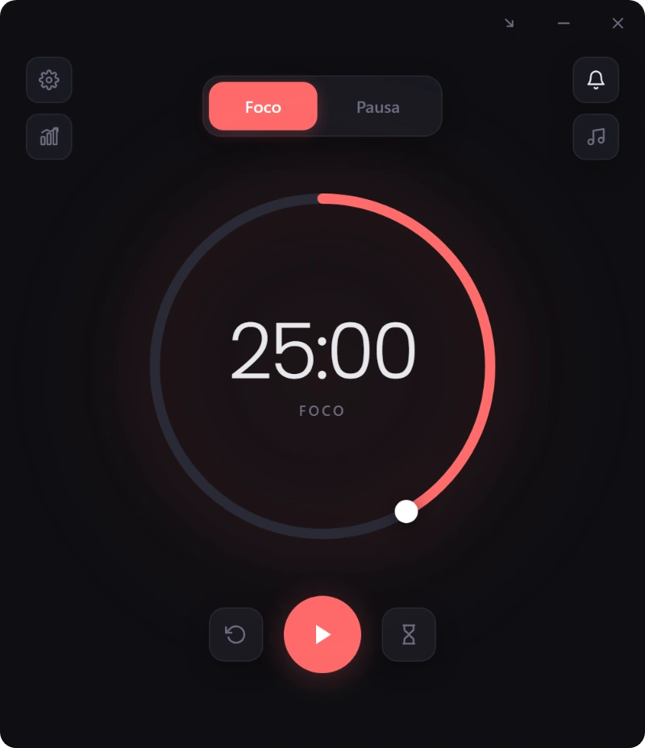
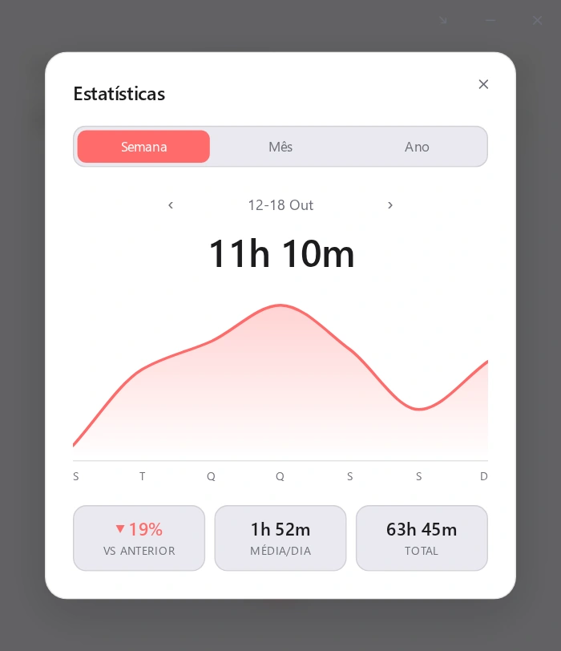
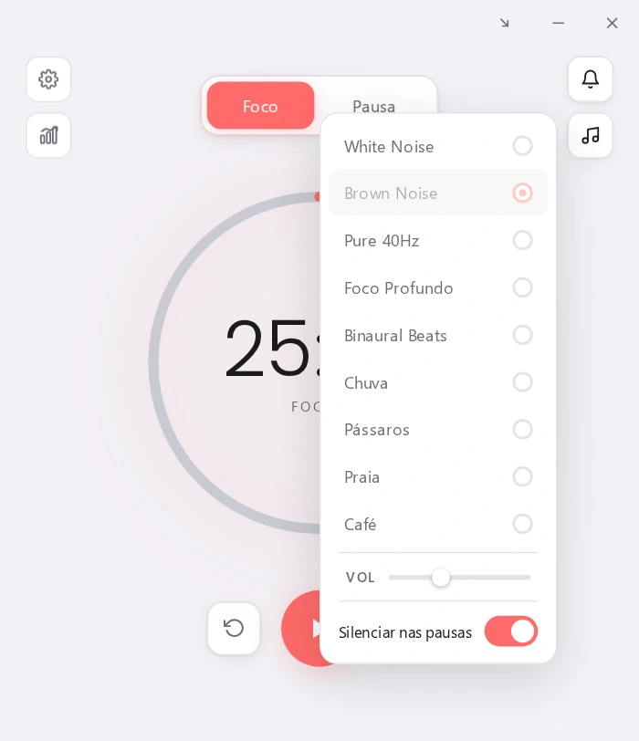
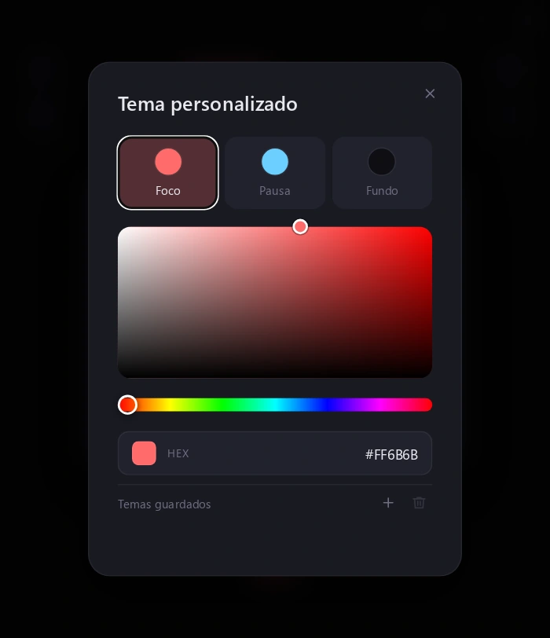

Temporizador de foco para Windows
Tempo para
focar.
Define uma sessão, põe a chuva a tocar e mantém o temporizador junto aos apontamentos. Quando o anel chegar ao fim, faz uma pausa.
Grátis · Windows 10 e 11 · 64 bits

Mini Mode
Menos janela.
Mais espaço.
Reduz o temporizador ao essencial. O Mini Mode fica sobre o PDF, a ficha de exercícios ou os apontamentos, com o relógio e os controlos sempre à mão.

Dentro da app
A tua rotina
de estudo.
As sessões e preferências ficam no PC. Se quiseres sincronizá-las entre dispositivos, inicia sessão com o Google.
Estatísticas
Vê onde investiste o teu tempo.
Revê uma semana, um mês ou um ano. O gráfico mostra o tempo que passaste em foco.

Som
Escolhe o som que te acompanha.
Estuda com chuva, ruído castanho ou um dos outros sete ambientes. Ajusta o volume do alarme em separado.

Aspeto
Dá uma cor a cada fase.
Escolhe uma janela clara ou escura e ajusta as cores do foco e da pausa em separado.

Trailer
Uma sessão em 50 segundos.
Ler a descrição do vídeo
- 0:00
- O temporizador abre. São ajustados a duração da sessão, as cores e o som de fundo.
- 0:24
- O Mini Mode mantém o tempo visível sobre um PDF e duas janelas com apontamentos de cálculo.
- 0:38
- Um toque assinala o fim do foco. As estatísticas mostram o tempo acumulado nas sessões.
- 0:47
- Surgem o nome Study Pomodoro e o distintivo da Microsoft Store.
Som de notificação Cloud por akx · CC BY 3.0 · volume ajustado e misturado com música original